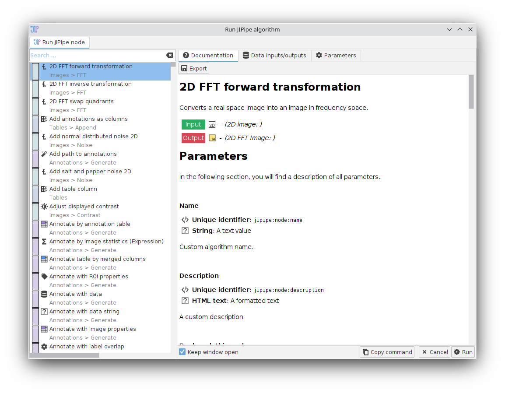

ImageJ integration
JIPipe algorithms and pipelines can be executed from within an ImageJ environment. There are two ways JIPipe integrates back into ImageJ:
- You can run a pipeline project from a macro/command
- You can run JIPipe algorithms from a macro/command if the slot data types are supported by ImageJ
Running a pipeline
You can run an JIPipe pipeline via the command Plugins > JIPipe > Run JIPipe project. It will ask you
the project file and the output directory.
To run the command via a macro, run:
run("Run JIPipe project", "projectFile=<Project>, outputDirectory=<Directory>, threads=<Threads>")
There can be issues using the macro recorder depending on which ImageJ algorithms are used. This issue is especially prevalent in ImageJ macro algorithm nodes.
You can also run JIPipe in headless-mode just like any ImageJ2 algorithm:
./ImageJ-linux64 --headless --ij2 --run "Run JIPipe project" 'projectFile="<Project>", outputDirectory="<Directory>", threads=<Threads>'
While JIPipe works in Headless-mode, some ImageJ algorithms don’t. You will get an error message if an algorithm requires a graphical environment.
Running a single algorithm
JIPipe algorithms can be run from ImageJ macros/commands if the slot data types are compatible with ImageJ.
By default, this includes any image data type, result tables, and regions of interest (via ROIManager).
If you run the command Plugins > JIPipe > Run JIPipe algorithm, a dialog with all available algorithms,
parameters, and more information is shown.
A difference to the parameter panel of an algorithm within the graph editor UI is that you have to select the input image.

Output data is created according to the slot name. For example if the output slot name is Output,
the created image window will also be named Output.
Just as in a graph, images are converted automatically to the data type specified by the algorithm.
There may be issues if multiple ROI or result table outputs are generated. JIPipe will merge multiple ROI List data items into one Results Table.
There can be issues using the macro recorder depending on which ImageJ algorithm is executed. This issue is especially prevalent in ImageJ macro algorithm nodes.
To run the command via a macro, run:
run("Run JIPipe algorithm", "algorithmId=<Algorithm>, algorithmParameters=<Parameters>")
The algorithm ID can be looked up via the plugin manager. Algorithm parameters are provided as string in JSON format. The JSON data should have following structure:
- (Optional) An object
parametersthat contains the algorithm parameters. They are equal to the parameters saved in an JIPipe project file. We recommend to use theCopy commandbutton to obtain the parameters. If you leave out parameters, the default value is assumed. - (Optional) An object
add-inputthat contains additional input slot definitions. The entry keys are the slot names. - (Optional) An object
add-outputthat contains additional output slot definitions. The entry keys are the slot names. - (Optional) An object
input. Entry keys correspond to the slot name. The entry value is a string that corresponds to the Window name that contains the data. Only required for image data types, as JIPipe accesses the global ROI manager and global result table.
Use the “Copy command” button in the “Run JIPipe algorithm” GUI command to quickly create a valid macro for your parameters.